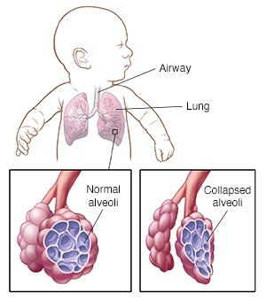

| SP‑C Deficiency ‣ Course Overview How Lungs Work How Do We Breathe? What Is Surface Tension? How Is Surfactant Made? Words to Know SP‑C Deficiency What Is SP‑C Deficiency? What Causes It? Signs & Symptoms Getting a Diagnosis Treatment & Care Outlook & Prognosis Living with SP‑C Questions for Your Doctor Resources Downloads & Links |
Part 2 of 3 — How Lungs Work. In the last section you learned how air moves through the lungs. Now find out why the wet surfaces inside the alveoli create a problem — and why the lungs need help to stay open. Why the Lungs Are Wet InsideWhat Is Surface Tension?
The Problem in the Lungs In the alveoli, surface tension pulls the wet walls inward — like a wet balloon that wants to squeeze shut. If an alveolus collapses, it takes a great deal of effort to force it back open with the next breath. Breathing becomes exhausting very quickly. The smaller the alveolus, the stronger this collapsing force. This is why premature babies often struggle to breathe — their alveoli are tiny, and they have not yet made enough surfactant to fight the tension. Key Ideas
Why This MattersThe lungs solve the surface tension problem with a substance called pulmonary surfactant. In the next section you will see exactly how the Type II cells you learned about earlier build and release surfactant to keep every alveolus open. |